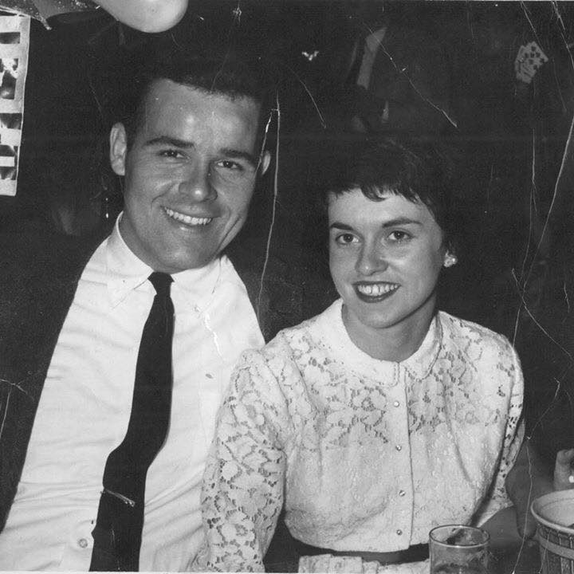

I would visit Valparaiso in Chile. It is right on the coast and has beautiful temperate weather all year round. I would also like to learn more about the culture and language there.
I admire my grandmother Katie Krueger. For the era she was living in, she had a very progressive outlook on life. She was a quirky spitfire, but the sweetest woman you'd ever know when she was on your side.
